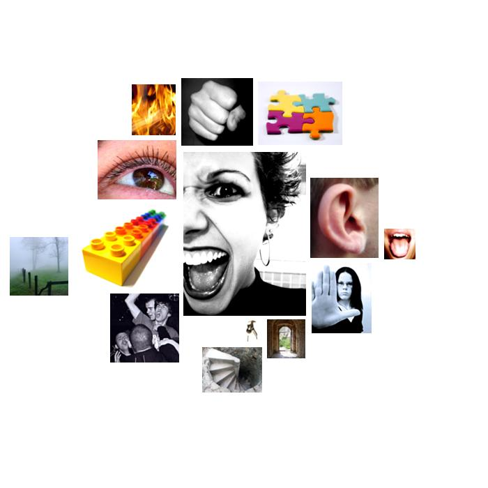

giuliani.txt
  anxiety
anxiety terrorists, terror, terrorists, terrorism, terrorism, dangerous, crisis, terrorism, terrorism, horror, terrorism, terrorism, terrorists, terrorists, terrorists, terrorist, terrorists, fear, terrorists, terrorists, terrorist, terrorist, terrorism, terrorism, terror, terrorist, terrorists, terrorism, terrorism, terrorism, terrorism, terrorists, trouble, terrorists, terrorism, terrorism, terrorist, terrorism, terrorism, horrific, terrorism, terrorism, terrorists, terrorism, terrorism, terrorist, terror
 concreteness
concreteness here, here, center, long, here, open, over, at, at, outside, inside, at, place, center, over, at, within, middle, east, longer, at, between, position, at, point, at, position, at, point, where, where, at, position, separating, position, at, positions, over, position, position, longer, here, longer, between, long, over, here, along, at, point, toward, over, at, toward, out, at, center, here, over, here, where, long-term, middle, east, middle, east, pointing, middle, east, over, middle, east, long, off, far, away, open, overwhelm, at, extend, long-term, at, long-term, here
 sound
sound hear, heard, heard, heard, heard, hearing, hear, loud, voice, heart, heard, heard
 abstraction
abstraction them, certain, believe, believe, history, ideas, important, important, history, reality, something, concentrate, believed, history, determined, history, history, history, exception, learn, consequences, learned, learned, cause, almost, decided, doctrine, real, true, choosing, choose, choose, qualities, beliefs, them, important, characterized, opinion, important, opinion, important, calculating, something, circumstances, exception, different, certain, source, determined, history, them, certain, determined, them, them, them, planned, fact, opinion, reason, sure, true, know, real, real, opinions, them, them, sure, probably, know, differences, sure, certainly, understood, understood, understood, plan, believed, believe, reasons, them, something, basic, certainly, models, important, doctrine, believe, know, may, may, idealistic, may, idealistic, determined, know, know, know, history, them, real, true, certain, themselves
 aggression
aggression attacked, shot, weapons, destruction, doubt, defeat, threat, attack, attacked, defeat, attacks, attack, attack, attacked, murdered, murder, attack, destruction, destroying, war, defeated, ridicule, defeat, ridiculed, stubbornness, criticism, invaded, war, war, war, war, opposite, combatting, combatting, opposed, war, enemies, raging, hurts, threat, critical, destroy, slaughtered, weapons, destruction, weapon, destruction, weapons, destruction, violence, hatred, hatred, anger, blaming, slaughter, war, war, torn, ripped, defeat, battles, war, battle, attacks, attack, war
 chaos
chaos chance, confused, chance
 vision
vision looking, seeing, seeing, seeing, view, view, observing, vision, saw, saw, sees, vision, see, views, appear, viewpoint, imagine, beamed, looked, saw, look, vision, sees, vision, see, see, look
 restraint
restraint reign, stop, necessary, police, determined, arrested, must, stopped, must, determined, necessary, determined, police, police, police, permitted, stop, necessary, prevail, police, catches, must, determined, prevail
 diffusion
diffusion cloud, cloud, curtain
 depth
depth lower, lower, below, cavernous, lower, under, under, below
 fire
fire flames, fires, firefighters, firefighters, firefighters
 brink-passage
brink-passage floor, street, streets, barrier, barrier, fence, streets, wall, wall
 taste
taste source
 hard
hard rock, solid, hardly, iron